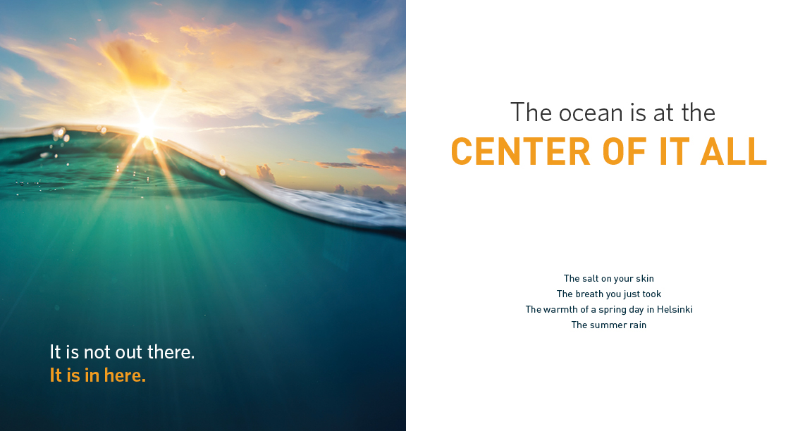
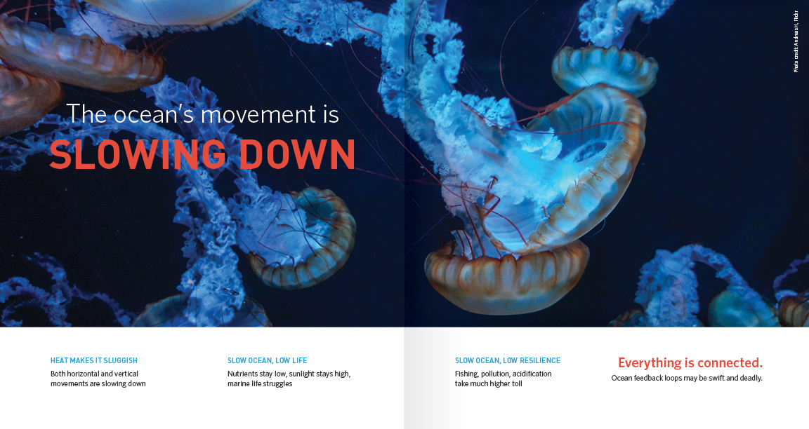

When Ocean Conservancy came to me about designing a printed booklet, I couldn’t have been more excited. For one thing, I love designing books—the stock choices, the size, shape, type, and color flexibility, breaking out my Pantone books, the awesome smell of a freshly-printed piece. Ahhhhh.
What? You don’t smell your projects? You’re missing out.
As an advocate for the health of our oceans and the animals living within them, Ocean Conservancy is also the type of organization that aligns with another passion of mine—ocean and wildlife conservation. This booklet was aimed at making a bold statement, and a lasting impression on potential partners who could help make even greater strides in protecting our oceans. A key theme to the book was the ocean’s movement, which we subtely conveyed through a mix of graphic and photographic elements. As Ocean Conservancy is a non-profit organization, there wasn’t a big budget for photography, so all assets were either Creative Commons or client-owned resources.
For more information on Ocean Conservancy, visit their website at oceanconservancy.org.
